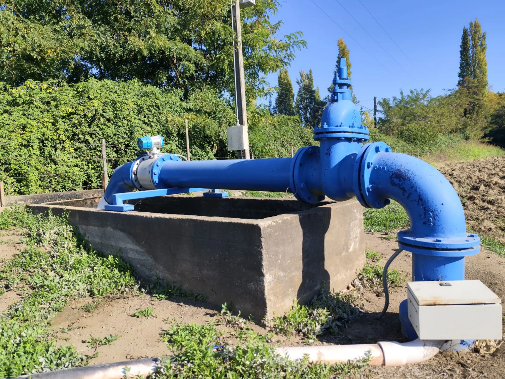

Soluciones integrales en telemetría, ingeniería y administración para el desarrollo agrícola y comunitario.

Somos una empresa dedicada a optimizar el recurso hídrico a través de tecnología avanzada y gestión administrativa eficiente. Con más de 20 años de experiencia, unimos la ingeniería con el compromiso social agrícola.
Contribuir a mejorar la calidad de vida de los asociados a través de la profesionalización en el uso de los recursos económicos, humanos e hídricos.
Ser la empresa consultora y constructora estable, confiable, cercana y reconocida por clientes y regantes asociados para la ejecución de proyectos de riego, como infraestructura hidráulica y monitoreo de caudales.
Ofrecemos un ecosistema completo de servicios para la gestión eficiente del recurso hídrico.
Instalación de sensores ultrasónicos y transmisión de datos vía GPRS/Satélite para monitoreo continuo de caudales y niveles.
Cotiza aquí →Obras civiles: revestimiento de canales, entubamiento, canal abovedado y marcos partidores. Infraestructura hidráulica de alta calidad para recuperar pérdidas de agua.
Cotiza aquí →Asesoría legal y técnica para juntas de vigilancia, comunidades de usuarios de aguas. Cumplimiento normativo y gestión documental. Estudios y elaboración de riego.
Cotiza aquí →Diseño de ingeniería hidráulica a medida. Soluciones de riego eficientes y sostenibles adaptadas a cada territorio.
Cotiza aquí →Gestión operativa continua de canales y sistemas de distribución.
Cotiza aquí →
Sistema que mide derechos de aprovechamientos de agua con tecnología de vanguardia
Control total de tus recursos hídricos.
Monitoreo de caudales 24/7 con acceso en tiempo real desde cualquier dispositivo.
Cumplimiento del Decreto 53 y Resolución 1238 de la Dirección General de Aguas.
Notificaciones inmediatas ante variaciones críticas en caudales y niveles freáticos.
Manejo transparente de cuotas y presupuestos anuales con rendición de cuentas detallada.
Coordinación de celadores, limpieza de canales y mantenimiento preventivo programado.
Elaboración de actas y cumplimiento legal de normativas vigentes.
Más de 30 km de construcción de canales y una reducción significativa en pérdidas de agua.
 Monitoreo
Monitoreo Monitoreo
Monitoreo Monitoreo
Monitoreo Monitoreo
Monitoreo
Monitoreo Construcción
Construcción